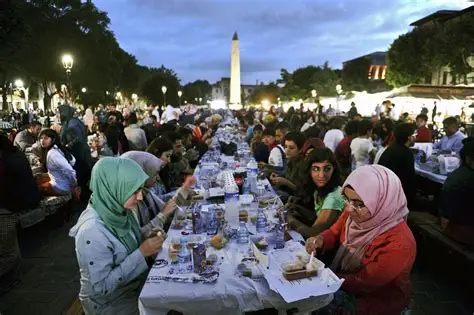
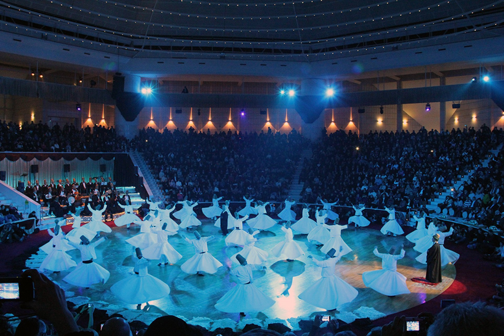

Quick intro
Turkey lies at the crossroads of Europe and Asia. Its culture reflects centuries of Ottoman, Byzantine, Anatolian, and Mediterranean influences, with a strong focus on hospitality, family, and ritual, and laws largely shaped by Islamic traditions.The festivals celebrated throughout Turkey gives a strong insight into Turkish culture.
Major festivals

Ramazan Bayrami (Eid al Fitr)
A three-day celebration that marks the end of Ramadan, the month of fasting. Families gather, children visit elders for blessings, and special sweets like baklava and seker (candies) are common. Charity is also given.
Kurban Bayramı (Eid al Adha)
A four day holiday commemorating the prophet Abraham's willingness to sacrifice. Traditionally animals are sacrificed and meat is shared with family, neighbors and those in need. It is also a time for travel and visiting relatives.

Mevlana Festival Konya (Whirling Dervishes)
Held in December around the anniversary of the Sufi mystic Rumi (Mevlana). Features the mesmerising whirling ceremony along with poetry and music.
Republic & National Days
23 April, 19 May, 29 October Modern national holidays include Children’s Day (23 April), Youth & Sports Day (19 May) and Republic Day (29 October), celebrated with parades, concerts and civic events.
Local & Seasonal Festivals
Across regions there are harvest and seasonal festivals (for apricots in Malatya, cherries in various towns, olives in the Aegean) and Nevruz (spring festival) celebrated by some communities.